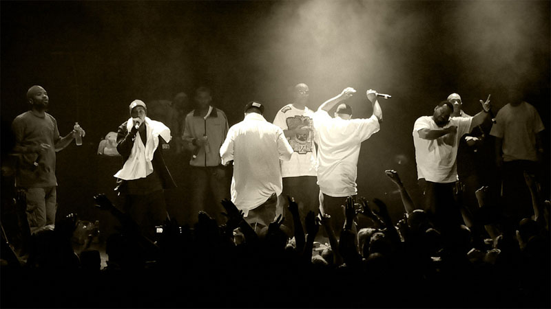

WU TANG CLAN, ESTABLISHED IN 1992, IS ONE OF THE MOST RECOGNIZED HIP HOP COLLECTIVES IN HISTORY. WITH ONE OF THE MOST INNOVATIVE AND CELEBRATED DISCOGRAPHIES IN HIP HOP, WU TANG CLAN HAS ESTABLISHED ITSELF AS ONE OF THE GREATEST FORMATIONS OF TALENT THAT MUSIC HAS EVER SEEN.